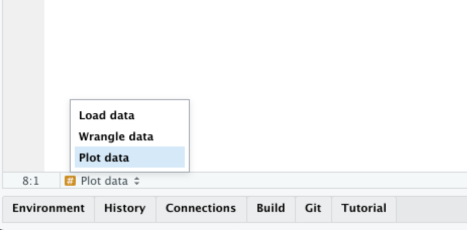
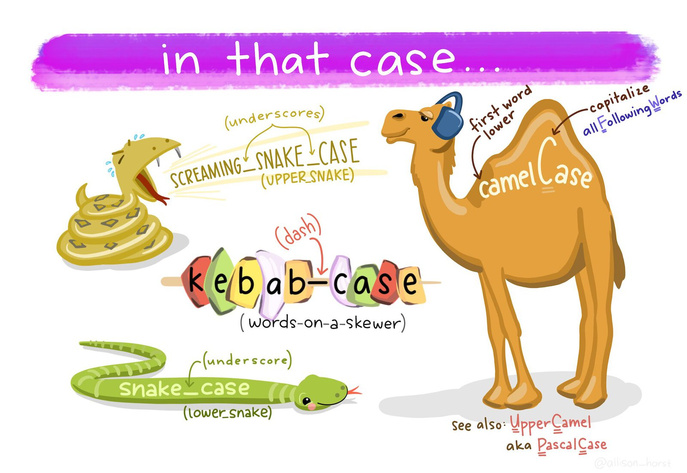

4 Code with style
Learn how to format your code so that it is easier to read, both for you and for others.
To load the interactive tutorial for this chapter, copy and paste the following code into the RStudio console:
and press Enter.
4.1 Introduction
Now that you’re beginning to write code in R, it’s time to introduce a few conventions for how to write code so that it’s easier to read. This is important because “good coding style is like correct punctuation: you can manage without it, butitsuremakesthingseasiertoread”.
Writing readable code is particularly important because it is much easier to find mistakes in well-written code, and your code will inevitably contain mistakes (everyone’s code contains mistakes!).
Writing code has been compared to performing in a band:
You might be relaxing at this point, thinking “that isn’t a problem for me, because I’m the only person who is going to be working on my code”. If so, think again. It’s been said that in data science that there are always at least two people working on a project: the you who is working on the code now, and the past you who has worked on the same code previously. The problem is that past you does not answer emails. So you can save future you a lot of hassle later by writing readable code.
This tutorial introduces some basic guidelines on formatting your code. This is a condensed version of the The tidyverse style guide, which provides lots more detail. All the code you see in the tutorials in this course was written following this style guide.

On Perl from Three Panel Soul. Some content on this page contains public sector information licensed under the Open Government Licence v3.
4.2 Organising your code
Up until now we have only written code in the code boxes within these interactive tutorials, but when you move on to make maps using your own R code you will typically write that code in the RStudio source panel. Your code will usually be in one or more files with the .R file extension. Whether you keep all your code for a specific project in one file or split it into multiple files is up to you. Generally you should do whatever makes it easier to understand how your code is structured.
4.2.1 Leaving notes for future you
Within each .R file, you can make your code easier to understand in several ways. First, add a comment (one or more lines beginning with # followed by a space) at the top of the file to explain what the code in that file does. This will make it easier for you to know that you’ve found the right file if you are looking for it in a few weeks when you’ve forgotten (which you will) what file contains what code.
Comments should usually start with a capital letter and follow normal English rules of punctuation, spacing, etc.
4.2.2 Letting your code breathe
Unless your code is very simple, it will probably consist of several separate tasks that are completed one after another. For example your code might download some data, wrangle it and then plot it on a map. In that case, it can be useful to split your code up into blocks by leaving a blank line between the code needed for each task. For example, if we take the code:
library(lubridate)
library(tidyverse)
crimes <- read_csv("crime_data.csv")
crimes <- janitor::clean_names(crimes)
burglaries <- filter(crimes, type == "burglary")
burglaries <- mutate(burglaries, month = month(date_time))
ggplot() +
geom_point(aes(x = lon, y = lat, colour = month)) +
theme_void()it becomes easier to read if we split the code up into four tasks: loading the necessary packages, reading the data, wrangling the data and plotting the data.
library(lubridate)
library(tidyverse)
crimes <- read_csv("crime_data.csv")
crimes <- janitor::clean_names(crimes)
burglaries <- filter(crimes, type == "burglary")
burglaries <- mutate(burglaries, month = month(date_time))
ggplot(burglaries) +
geom_point(aes(x = lon, y = lat, colour = month)) +
theme_void()Since data wrangling involves several steps and each function uses the result of the previous step, we could use the pipe operator |> to make that code a bit cleaner:
4.2.3 Header comments
If your code includes very long tasks (e.g. where the code takes up more than a full screen on your computer), you might want to use header comments to divide your code into sections. You can do this by writing a comment that is followed by four of more hyphens (----):
RStudio will recognise lines that end in four or more hyphens as being headings, and will create a table of contents for your code. You can use this to move between headings by clicking on the Jump To menu at the bottom of the Source panel in RStudio:
In general, writing code that is readable is more important than writing the shortest code possible, so don’t be afraid to let your code breathe by using space to separate your code into meaningful chunks.
quiz(
caption = "",
question(
"How do you write a comment in R?",
answer("A `#` symbol followed by a space. Comments should start with a capital leter. e.g. `# Load data`", correct = TRUE),
answer(
"A `#` symbol, followed by no spaces. Comments should start with a capital letter. e.g. `#Load data`",
message = "Not quite right: comments should start with a capital letter but should also have a space after the initial `#` symbol."
),
answer(
"A `#` symbol followed by a space. Comments should be in lower case unless the comment is long enough to contain more than one sentence. e.g. `# load data`",
message = "Not quite right: comments should start with a space after the initial `#` symbol, but the comment text should start with a capital letter."
),
answer(
"A `#` symbol, followed by no spaces. Comments should be in lower case unless the comment is long enough to contain more than one sentence. e.g. `#load data`",
message = "Not quite right: comments should start with a space after the initial `#` symbol and the comment text should start with a capital letter."
),
correct = random_praise(),
allow_retry = TRUE,
random_answer_order = TRUE
)
)4.3 Naming objects
R objects can have any name you like, as long as the name starts with a letter and contains only letters, numbers, dots (.) and underscores (_). That said, you will find coding easier if you follow a few conventions.
- Use only lower-case letters in the names of objects, which avoids you having to remember whether a particular letter was upper- or lower-case.
- Use snake case (
object_name, with words separated by underscores) for object names rather than camel case (objectName) or kebab case (object-name). - Don’t use dots in object names.
- Don’t give objects the same names as R functions, because re-using function names makes reading your code more difficult.

Just as crime_data_atlanta_2020.csv is a more-useful file name than data_file_23.csv, you will find it easier to read your code if you give your objects meaningful names. So when you load data into R (e.g. with read_csv()) don’t just call it data (not least because there is a function named data()) but instead give it a name like atlanta_crimes if it contains (for example) crime data from Atlanta.
quiz(
caption = "",
question(
"Which of these would be a good name for an object containing data on homicides in Abu Dhabi?",
answer("`abu_dhabi_homicides`", correct = TRUE),
answer(
"`homicide_data`",
message = "Not quite right: this name is in the right case, but could better describe the data it contains."
),
answer(
"`Abu_Dhabi_homicides`",
message = "Not quite right: it's best to only use lower-case characters in variables, so you don't need to remember whether you've used upper- or lower-case characters."
),
answer(
"`abu-dhabi-homicides`",
message = "This will cause an error because the `-` indicates R should subtract one value from another."
),
correct = random_praise(),
allow_retry = TRUE,
random_answer_order = TRUE
)
)4.4 Spacing
Spacing out code makes it much easier to read, but (just as in any language) code is easiest to read if spaces are used where people expect them to be by convention.
Mostly in R, we use spaces where we would expect them in English: after commas but not before, outside parentheses but not inside, etc.
# Good
read_csv("crime_data.csv", skip = 4)
# Bad
read_csv("crime_data.csv",skip = 4)
read_csv("crime_data.csv" ,skip = 4)
read_csv("crime_data.csv" , skip = 4)Don’t put spaces inside parentheses, or between the names of functions and the parentheses:
Do put spaces around most operators (==, +, -, <-, etc.), including either side of = when specifying the values of function arguments:
# Good
height <- (feet * 12) + inches
mean(x, na.rm = TRUE)
# Bad
height<-feet*12+inches
mean(x, na.rm=TRUE)Although there are some operators that shouldn’t have spaces around them: $, @, [, [[, ^, : and ?.
question(
"Which of these lines of code has the optimal spacing?",
answer('`burglary <- filter(crimes, type == "burglary")`', correct = TRUE),
answer('`burglary<-filter(crimes,type=="burglary")`'),
answer('`burglary <- filter(crimes, type=="burglary")`'),
answer('`burglary <- filter ( crimes , type == "burglary" )`'),
correct = random_praise(),
incorrect = random_encouragement(),
allow_retry = TRUE,
random_answer_order = FALSE
)4.5 Functions
We’ve now got used to calling functions to do things in R, like calling read_csv() to load data from a CSV file or filter() to choose certain rows from a dataset. We know that we can change the behaviour of functions by using arguments. For example, we can wrap a a string of text into shorter lines using the str_wrap() function from the stringr package. str_wrap() needs two arguments: the text to be wrapped into multiple lines and the maximum length of a line of text before the next word is wrapped onto a new line. These arguments are called string and width, so we can call the function as:
The string argument provides the data that the str_wrap() function will work on, while the width argument provides the details of how that work should be done. Since the data argument to a function is typically required (the function makes no sense without it) and is often the first argument, you can omit the name of data arguments to functions. For all other arguments, it is best to give the argument name. So to use str_wrap(), you can write:
In general, you should keep lines of code to a maximum of 80 characters long, since they can easily fit on most screens and are easy to read. When calling a function, put all of the parameters on a single line if they will fit into 80 characters or less:
But if the function call is longer than 80 characters, use one line each for the function name, each argument, and the closing ), with the arguments indented by two spaces. This makes the code much easier to read.
# Good
do_something_very_complicated(
something = "that",
requires = many,
arguments = "some of which may be long"
)
# Bad
do_something_very_complicated("that", requires, many, arguments,
"some of which may be long"
)One mistake that people often make when splitting a function across multiple lines is to leave the closing parenthesis ) at the end of the last line of the function, like this:
# Bad
do_something_very_complicated(
something = "that",
requires = many,
arguments = "some of which may be long")The problem with this is that it makes it harder to see where a particular function ends. Instead, put the closing parenthesis on a line on its own, indented with the same number of spaces as the first line of the function:
# Good
do_something_very_complicated(
something = "that",
requires = many,
arguments = "some of which may be long"
)This makes it much easier to see where a function call starts and ends.
When combining multiple functions using the pipe operator (|>), put each function on a single line, with all but the first line indented by two spaces:
Once you learn about other types of R code you will need to know how best to style it, but we will learn about those when we need to.
quiz(
caption = "",
question(
"If a function is written across several lines of code because it will not fit on one line, where should the closing parenthesis `)` at the end of the function be placed?",
answer("On a separate line, indented as much as the function name.", correct = TRUE),
answer(
"On a separate line, indented as much as the arguments on the lines above it.",
message = "Not quite right: the closing parenthesis should be a separate line, but indented as much as the function name so that you can easily see where the function begins and ends."
),
answer("At the end of the final function argument, on the same line."),
answer(
"It doesn't matter where the closing parenthesis is placed as long as there is one.",
message = "While your code will wherever you place the closing parenthesis, the coding style guide introduced in this chapter is designed to make your code easier to read. This is important because if your code is easier to read that will make it easier to find and fix any mistakes in it."
),
correct = random_praise(),
allow_retry = TRUE,
random_answer_order = TRUE
)
)4.6 Styling your code automatically
You can get help on styling your R code using the styler package, which can automatically format your code for you. After you install the styler package with the code install.packages("styler"), you can style your code by:
- selecting the code you want to style,
- opening the
Addinsmenu at the top of the Source panel in RStudio, - clicking ‘Style selection’ in the ‘Styler’ section of the list of addins.

RStudio will also try to help style your code as you type, for example by automatically indenting lines.
4.7 In summary
You now know how to write your R code so that it is easy to read, which makes it much easier to understand. Understanding code when you read it is important because it allows you to work out what the code is trying to achieve and because it makes it much easier to find and fix problems when your code is not behaving as you want it to.
Writing readable, understandable code is important. To find out more about this, read some of these articles:
- Why coding style matters by Nicholas Zakas.
- The tidyverse style guide by Hadley Wickham, which is the basis for the rules outlined in this tutorial.
The tidyverse style guide licensed under the Creative Commons Attribution-ShareAlike licence. Artwork by @allison_horst